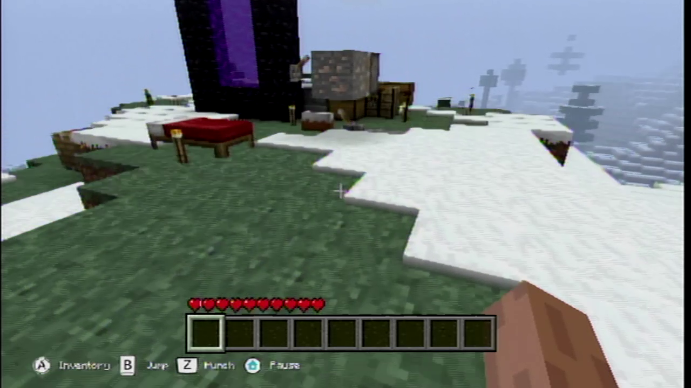
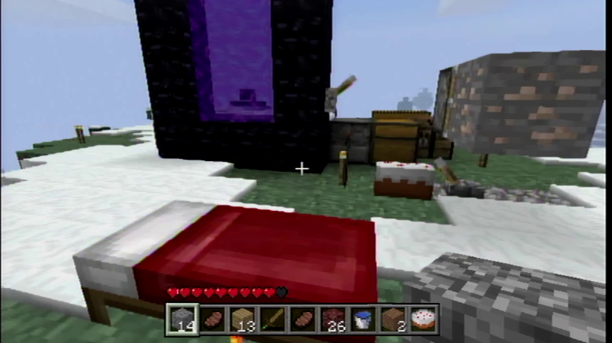
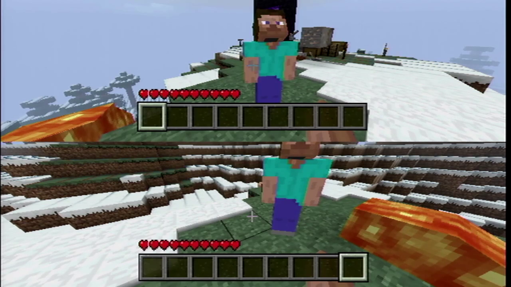
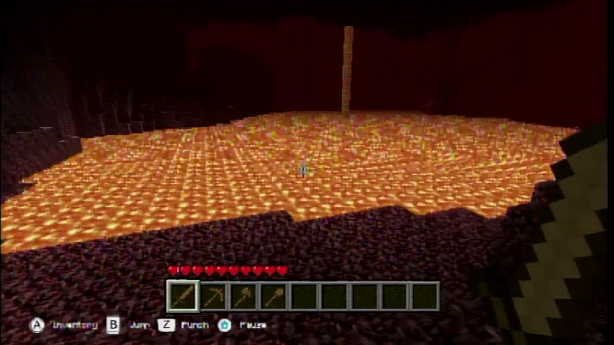
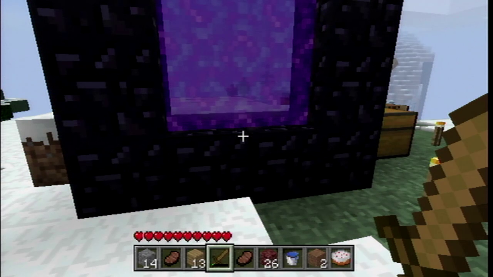
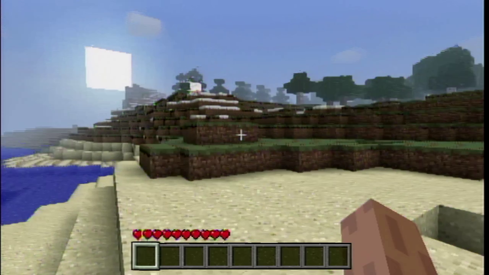
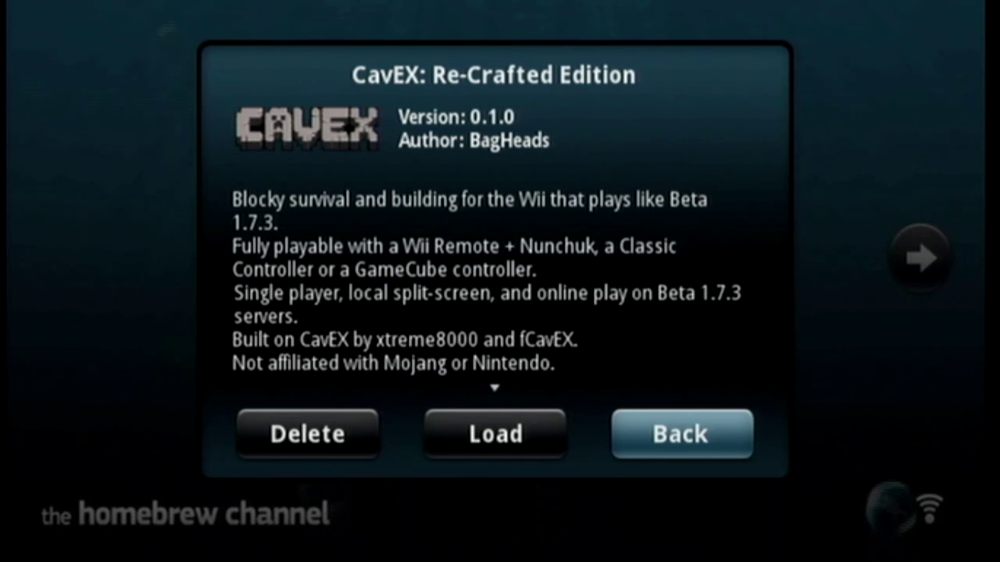

Plays like Beta 1.7.3. On your Wii.
Free homebrew. Pick up a Wii Remote + Nunchuk, a Classic Controller or a GameCube pad, and go dig.
Needs a Wii with the Homebrew Channel.

- Wii Remote + Nunchuk
- Classic & GameCube pads
- Split-screen
- Free, GPL · by BagHeads
What's in the box
Built for the couch
-

Three controllers
Wii Remote + Nunchuk, Classic Controller or GameCube pad, each with a full layout.
-
Real Beta 1.7.3 servers
Join a real Beta 1.7.3 server and chat with the on-screen keyboard.
-

Split-screen
Two players on one TV, each with their own controller.
-

The Nether
Light a portal and step through to lava lakes, fire and zombie pigmen.
-

Your Beta worlds
Drop in your real Beta 1.7.3 worlds and keep playing them on the Wii.
-

Tutorial Island
A world that teaches the controls, crafting, mining, farming and redstone.
Shown with your own Beta 1.7.3 textures - not included.
Texture packs: Earth & Ash (CC0) is the default and Isabella II by Bonemouse (CC BY 3.0) is included. Or bring your own Beta 1.7.3 pack; it is not included.
Five steps
Install
Download and check
Download the zip, then run
sha256sum -c SHA256SUMS. Every line should say OK. A-UNCERTIFIEDname means a test build.Copy to the SD card
Copy everything to the SD card root. The game lands in
sd:/apps/CavEX/.Start it
Open the Homebrew Channel, pick CavEX: Re-Crafted Edition, then press Load.

Try Tutorial Island
Play game → Load → Tutorial Island → Play world.
Optional: your own textures
The Pack Helper builds a pack from your own Beta 1.7.3 files. Nothing is downloaded. Your own Beta 1.7.3 texture pack is not included.
Pick up any pad
Controls
| Action | Remote + Nunchuk | Classic | GameCube |
|---|---|---|---|
| Walk | Remote + NunchukD-pad | ClassicLeft stick | GameCubeControl stick |
| Look | Remote + NunchukNunchuk stick | ClassicRight stick | GameCubeC-stick |
| Jump | Remote + NunchukB | ClassicA | GameCubeA |
| Break | Remote + NunchukNunchuk Z | ClassicZR | GameCubeR |
| Place | Remote + NunchukNunchuk C | ClassicZL | GameCubeL |
| Inventory | Remote + NunchukA | ClassicX | GameCubeY |
| Sneak toggle | Remote + Nunchuk1 | ClassicY | GameCubeZ |
| Hotbar | Remote + NunchukMinus / Plus | ClassicFull L / full R | GameCubeB / X |
| Chat | Remote + NunchukTap 2 | ClassicD-pad Up | GameCubeD-pad Up |
| Pause | Remote + NunchukHome | ClassicHome | GameCubeStart |
Drop items from the inventory screen on every pad.
Release 10/31
Get it on your SD card.
Download for WiiKnown issues: see the release notes on GitHub.
Plays like Beta 1.7.3.
Your own Beta 1.7.3 texture pack is not included.
Not affiliated with Mojang or Nintendo.
Who made it
Credits
- CavEX by xtreme8000 (ByteBit), with fCavEX fork work by yyy257, ByteBit and jilleb. GPLv3; CaveWii changes are GPL.
- Earth & Ash texture pack, CC0 1.0.
- Isabella II by Bonemouse, CC BY 3.0.
- Wii hand pointer from the Homebrew Channel by Team Twiizers / fail0verflow, GPLv2.
- BagHeads boot art © 2026 BagHeads.
- Libraries: libogc, cNBT, cglm, lodepng, miniaudio, parson, m-lib, greatest.